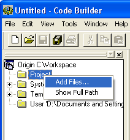

Anhängen von Dateien an das Origin-Projekt
Verwenden Sie den Code Builder, um Fremddateien, die mit Origin-Projektdateien gespeichert wurden, anzuhängen oder abzurufen.
Anhängen von Dateien an das OPJ
Um Dateien an das OPJ anzuhängen:
- Klicken Sie auf die Schaltfläche Code Builder
 in der Symbolleiste Standard.
in der Symbolleiste Standard.
- Klicken Sie mit der rechten Maustaste auf den Unterordner Projekt im Baum des Origin C-Arbeitsbereichs und wählen Sie Dateien hinzufügen.
- 
- Suchen Sie und wählen Sie die Datei(en) aus, die Sie an die OPJ-Datei anhängen möchten (Beachten Sie, dass Sie die Dateien ebenfalls aus den Ordnern User und Temp in den Ordner Projekt ziehen können).
- Wenn Sie die Origin-Projektdatei speichern, werden alle Dateien aus dem Ordner Projekt angehängt und innerhalb der OPJ gespeichert. Der Projektordner passt sich der OPJ-Datei an; der Inhalt dieses Ordners ändert sich nicht, wenn Sie Ihren Arbeitsbereich im Code Builder ändern.
Suchen und Öffnen von angehängten Fremddateien
Wenn Sie eine OPJ-Datei öffnen, an die Dateien angehängt sind, werden Hilfedateien extrahiert und in einem temporären Unterordner gespeichert.
Um den Pfad zu diesem Unterordner zu zeigen und die Dateien zu öffnen:
- Klicken Sie mit der rechten Maustaste auf den Ordner Projekt im Baum Origin C-Arbeitsbereich und wählen Sie Zeige vollständigen Pfad.
- Die angehängten Dateien können durch einen Doppelklick auf den Dateinamen geöffnet werden:
- Wenn der Dateityp vom Code Builder erkannt wird (Origin C - und OGS-Dateien werden besonders behandelt), werden diese Dateien in einem neuen Fenster der Mehrdokumentenoberfläche des Code Builders (MDI) geöffnet.
- Wenn der Dateityp vom Code Builder nicht erkannt wird, übergibt Origin die Datei zum Öffnen dem Programm Windows OS. Falls beispielsweise eine Microsoft Word-Datei angehängt wurde und Sie einen Doppelklick auf diese Datei durchführen, wird die Datei mit der Anwendung Microsoft Word geöffnet.
Alternativ können Sie zu dem temporären Unterordner gehen und die Datei mit Hilfe des Windows Explorers starten. Beachten Sie, dass beim Schließen des Projekts dieser Unterordner aus dem System gelöscht wird.
Spezielle Bearbeitung von Origin C- und OGS-Dateien
Die spezielle Behandlung von OC- und OGS-Dateien ermöglicht es, benutzerdefinierten Code an OPJ-Dateien anzuhängen und benutzerdefinierte Lösungen zu erstellen, die einfach an andere Origin-Anwender geliefert werden können.
An ein Projekt angehängte Origin C-Dateien werden kompiliert und geladen, wenn das Projekt, an das sie angehängt sind, geöffnet wird. Alle in OC-Dateien definierte Funktionen sind dem Anwender der Origin-Oberfläche beim Öffnen des Projekts zugänglich.
Mit OGS-Dateien können Sie Skriptabschnitte der angehängten OPJ aus der Oberfläche aufrufen, wenn das Projekt geöffnet ist. Wenn Sie beispielsweise eine Datei mit dem Namen MyScripts.OGS angehängt haben und die OPJ-Datei einmal geöffnet wurde, können Sie diesen Befehl im Skriptfenster ausführen:
Run.section(MyScripts, MySection);
Origin prüft, ob es eine Datei mit dem Namen MyScripts.OGS gibt, die an die geöffnete OPJ angehängt ist, und danach, ob MySection innerhalb der OGS-Datei existiert. Wird sie gefunden, wird dieser Abschnitt gestartet. Wird keine angehängte Datei gefunden, durchsucht Origin Ihren Anwenderordner und schließlich den EXE-Pfad für die benannten OGS-Dateien.
So werden angehängte Fremddateien behandelt, wenn OPJ-Dateien angehängt werden
Sie können eine Origin-Projektdatei an eine geöffnete Projektdatei anhängen. Dies fügt die Inhalte des angehängten Projekts dem aktuellen Projekt hinzu. Werden Projekte angehängt, behandelt Origin angehängte Fremddateien folgendermaßen:
- Falls eine Fremddatei desselben Namens nicht an das geöffnete Projekt angehängt ist, wird die Fremddatei an das geöffnete Projekt angehängt.
- Falls eine Fremddatei desselben Namens an das geöffnete Projekt angehängt ist, werden die Dateiinhalte verglichen. Sind die Inhalte identisch, wird die zweite Fremddatei verworfen.
- Falls die Dateinamen identisch, aber die Dateiinhalte unterschiedlich sind, wird der Dateiname der zweiten Datei durchgezählt (z.B. "TestData.txt" wird zu "TestData1.txt") und die Datei angehängt.